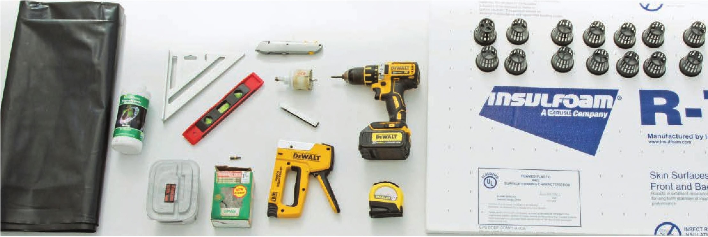

HOW TO BUILD A FLOATING RAFT GARDEN This design can be used as a model for smaller or larger floating raft gardens. No matter the size there are several steps that will remain the same, including adding a liner and building rafts. You may wish to use an existing container, like a kiddie pool, as your reservoir instead of building one, in which case you can simply skip ahead to building the raft. This design worked great for me but there are many ways to add your own spin to it. I painted this garden white because it is in a greenhouse that can get very hot and I wanted to do everything possible to prevent the nutrient solution from getting extremely hot (over 95°F). You may wish to use a darker color if your garden will be placed indoors or in a cooler environment. MATERIALS & TOOLS Reservoir 4 2 x 1 2" x 8' lumber 2 1 x 2" x 8' furring strip board 1 gal. Whitewater-based latex primer, sealer, and stain blocker (KILZ 2 LATEX) 1 lb. #1 0 x 2V2" exterior screws 1 lb. #8 x IV4" exterior screws 1 6 x 100' black 6 mil. plastic sheeting Safety Equipment Work gloves Eye protection Raft 1 1" x 4 x 8' insulation foam board 1 8 2" net pot Optional 18-72 2" net pots (additional pots to increase planting density) 1 Air pump with air stones 1 Small water pump with venturi attachment Tools Circular saw Paint roller and/or paintbrush Rafter square Level Drill Drill bits matching screws Staple gun and staples Heavy-duty scissors Razor blade knife Sawhorses with clamps Tape measure Permanent marker 2" hole drill bit (if using net pots) 52 DIY HYDROPONIC GARDENS
